Free to forkNo licence and no copyright claim: build this game under your own name, or lift one idea from it. Why?
Game overview
AAL Collector is a chill, side-view collectathon across generated star systems. You're a small field operative who climbs, swims and squeezes into hard-to-reach places, stuns and captures the local wildlife, and carries home relics no one has ever seen before.
Every planet, moon and drifting wreck is one tall slice of world, from orbit down through the sky, the surface, the seas and the caves to the bedrock. You fly a shuttle down, follow a glinting trail toward a signal, and solve the problem of getting there and back with your hands full. Combat is light and mostly optional. The game is about grabbing, tossing and hauling stuff around like a cheeky raccoon.
It's built on the tech of Terrene, the pixel-art planet explorer, with the collect-everything joy of Donkey Kong Country 3, Subnautica's creatures and the unhurried pace of Super Metroid before the final stretch. It's one of three games grown from the same notebook, and it's set in Reactorcore's AAL universe.
Target audience
Players who loved finding the hidden barrel in Donkey Kong Country, watching Subnautica's creatures, or filling a Pokédex, and who are tired of survival games that turn every creature into a threat and collectathons that turn every find into a checklist.
They want to wander, notice things and bring them home, at their own pace.
Keyboard and mouse, platformer controls. A careful player is never punished for being slow, and nearly every creature can simply be avoided.
Game's purpose
Discovery and variety: worlds, creatures and relics that are new every time, and the curiosity of finding out what that glint is.
Play and silliness: picking things up and throwing them, just because you can.
Care: bringing creatures home safely, each in a container that suits it.
It deliberately avoids draining rest (no timers, no survival meters, very little combat) and autonomy (any world in any order, leave any of them half-explored and come back later).
Core concept
Collectathons usually hand you a fixed list to tick off. Collectibles buy unlocks, and at 100% the game is over.
Here every collectible has a job in the world: a trail shows the way, a cache marks a place worth reaching, a relic is a thing worth keeping.
And the list never runs out. Every star system is generated, every relic is one of a kind, and what you bring back fills a gallery that keeps growing for as long as you play.
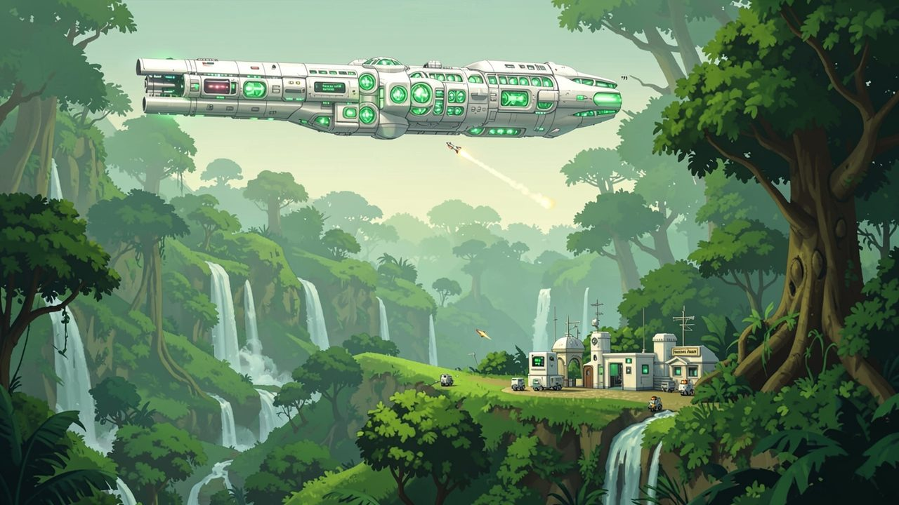
"The monsters are gone. Everything else is still there, and someone ought to catalogue it."
Lore and story
After the Standalones
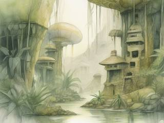
The space monster wars are over. The Standalones, self-replicating berserker superweapons, swept whole regions of the universe clean, and behind them they left small automated outposts: factories and towers crewed by worker bots, keeping the peace on worlds nobody has settled yet.
Those worlds are safe now, but far from empty. They're wild, full of native creatures, strange plants and the leftovers of civilizations that came long before. Before colonists move in, somebody has to go and see what's there.
The Bioarchive
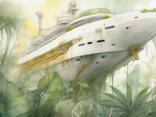
That somebody is the Bioarchive: a colossal research and collection megaship that travels from star system to system, cataloguing everything living and everything left behind. Creatures brought aboard are studied and given a home in its habitat decks. Relics are cleaned up and put on display. The ship is far too big to go anywhere near a planet, so it sends collectors.
The collector
You're one of them: a small human operative with a light, gentle kit, a shuttle for going down to the surface, and a carrier that serves as your own home base out in each system. Your tools stun and capture rather than kill, and your hands are your most important equipment.
The job right now
A new star system has been charted. The carrier has a list of signals worth checking, and the Bioarchive has a wish list. Go down, follow the glints, and bring back whatever's asked for, and whatever else catches your eye.
Controls and interface
On foot you control the collector from the side, with platformer movement in the spirit of Donkey Kong Country and mouse aim for anything you throw or fire. The shuttle flies freely in every direction, between the carrier in orbit and anywhere on the planet that has room to land.
On foot
A / D
Walk and run
Space
Jump; hold to jump higher
W / S
Climb vines, ropes and back walls; swim; crouch
Shift
Roll, under gaps and through loose ground
Hands
E
Grab, pick up, put down
Left click
Throw what you're carrying at the pointer; the distance sets the strength
Right click
Stun shot
Q
Throw a capture pod at a stunned creature
Shuttle
W A S D
Thrust in any direction
Shift
Boost
Right click
Winch: hook a heavy load and haul it underneath
E
Board, or step out
Kit
F
Scan a creature, a relic or a signal
Tab
Signal list and the star map
Esc
Pause
Carrying is the heart of the controls. Anything loose can be picked up: a rock, an egg, a relic, a stunned creature in its pod, a crate, a worker bot that's stuck. Light things go overhead and barely slow you down; heavy ones take both hands, make jumps shorter and turn a climb into a puzzle. The HUD is small and quiet: the carried object's weight, the signal you're heading for, and nothing else.
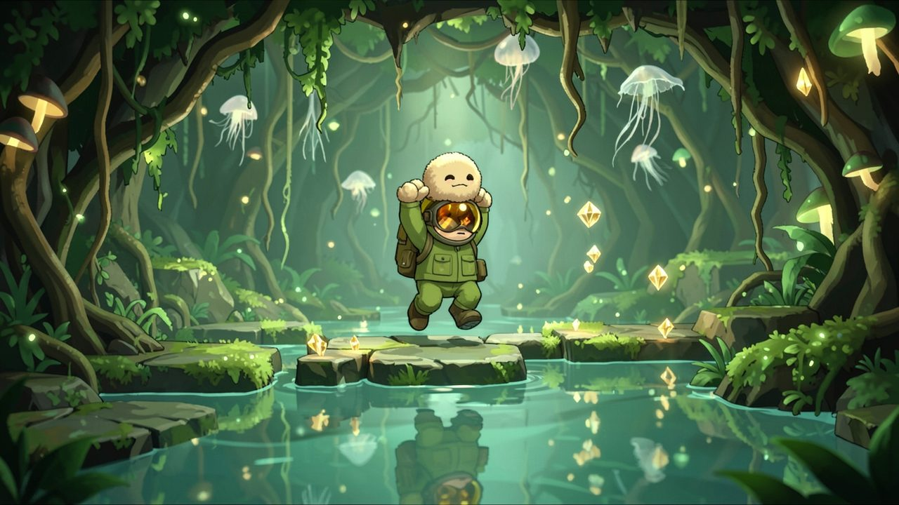
"Light things go over your head. Heavy things make every jump a little shorter."
Game layers
01 · Moment-to-moment
One world, one signal at a time
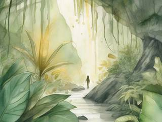
Drop from the carrier in the shuttle, burn through the atmosphere and land where there's room. Then go on foot: follow the glint trail, climb, swim, roll through a gap, toss a rock at a switch, sneak past a territorial beast or stun it and carry it off.
Whatever you find has to get back to the shuttle, and that's the other half of the puzzle: the egg is fragile, the relic is heavy, and the creature you just captured is in a pod you're carrying up a cliff.
02 · Low metagame
A star system expedition
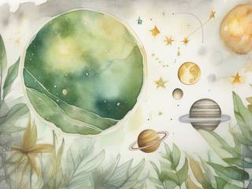
Each star system is one expedition: a handful of planets, moons, asteroid fields and derelicts on the carrier's star map, each with its own list of signals and the Bioarchive's wish list on top. Visit them in any order, leave one half-explored, come back later. There's no final gate to unlock and no countdown.
When the list is done, or when you've had enough of this system, the carrier warps on to the next one.
03 · High metagame
The Bioarchive's galleries
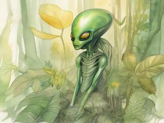
Everything you bring home ends up aboard the Bioarchive. Each star system gets its own gallery of recovered relics, every one of them unique, and the creatures you captured live on in its habitat decks, each one logged with where and how you found it.
That's the infinite overarching goal: cataloguing a universe that has no end of systems. The galleries are a living record of where you've been. They don't pay out or unlock anything; they're simply yours, and they're worth wandering through.
04 · Practical game flow
One signal or a whole system
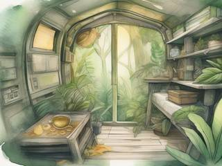
A single signal takes a quarter of an hour or so, a world an evening, a whole system a few evenings. Save anywhere. Back on the carrier, everything waits: the map, the half-explored worlds, the crate of finds you haven't sent up yet.
Game modes
There's one mode: the expedition. It nests, so it fits any amount of free time:
The BioarchiveEndless: one star system after another, and a gallery for each.
A star systemSeveral worlds on the star map, in any order: a few evenings.
A worldOne tall slice from orbit to bedrock, with its own signals: an evening.
A signalOne trail, one find, and the trip back to the shuttle: a quarter of an hour.
Two people's finds never get compared, and nothing is timed.
Features and mechanics
The heart of it
Stun, capture, contain
Creatures behave the way Subnautica's do: some peaceful, some territorial, some shy, a few predatory, in every size. Usually you can just go around them. When one is on the Bioarchive's wish list, or simply one you'd like to keep, stun it, pod it and carry it home.
The pod only holds a creature for the trip. Back at the carrier it needs a proper container, and every kind of creature needs its own, which you build in the carrier's workshop from what you've gathered:
The creature
Its container
Slime and jelly creatures
A sealed glass tank
Swimmers
A water tank
Lava and magma beings
A stone cube
Burrowing critters
A packed earth box
Fliers
A tall wooden crate
Clever, fussy hunters
A climate-controlled tech pod
Reading a creature to work out what it needs is half the fun, and the scanner helps. Nothing gets hurt along the way: a stunned creature wakes up groggy and fine.
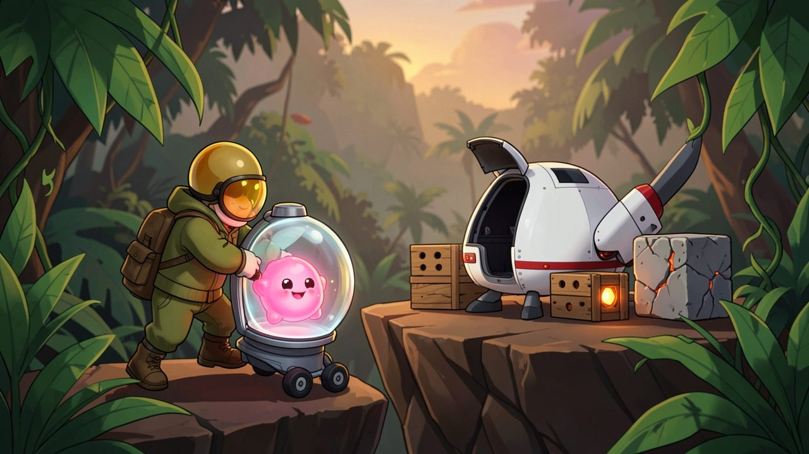
"The pod only holds it for the trip. At the carrier, every creature gets a container that suits it."
Cheeky raccoon physics
Grab it, toss it, haul it
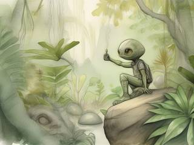
Everything loose in the world has a weight and can be picked up, carried, dropped and thrown. A thrown rock presses a switch, knocks fruit loose or lures a predator away; a crate stacked on another crate is a step; an egg dropped from too high breaks.
Weight is the natural limit. Light finds ride overhead, heavy ones take both hands and slow you down, and the heaviest relics need the shuttle's winch: hook them underneath and fly them out of the canyon, carefully. Big loads go into the shuttle's hold, and the hold goes up to the carrier.
Collectibles with a job
Four kinds of find
The collectibles follow Donkey Kong Country 3's set of four, but each one does something in the world instead of filling a counter:
Find
What it's for
Glint trails
Small golden crystals strung along the way to a signal, like DKC's bananas. They show the route, and the gaps in a trail show where the route gets interesting.
Caches
Survey caches tucked into the hardest places to reach, or guarded by a big territorial creature. Reaching one is the point; inside are supplies for the workshop.
Challenge sites
Small, self-contained puzzles and obstacle runs, like DKC's bonus rooms. Each one leaves you a short-lived booster: a higher jump, a lighter load, a longer stun.
Supercores
The big, rare finds: alien power cores that boost your kit until they wear out (see below).
None of them is a key or a currency. Nothing in the game is locked behind a count of anything.
One of a kind, every time
Generated relics
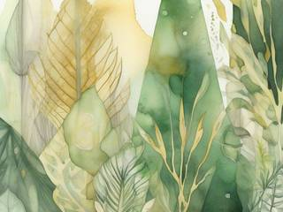
Relics aren't drawn by hand. Each one is assembled from random shapes in a random arrangement, each shape with its own micro-texture, tint and pattern, so no two are ever alike. A star system's relics share a little of its look, the way finds from one dig site do, so its gallery hangs together.
This is content that multiplies: a few dozen shapes, textures and patterns combine into more relics than anyone could ever collect, and every one you carry home is the only one there is.
Why you go where you go
Signals and honest guesses
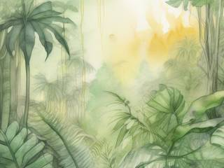
The carrier picks up signals from each world: biosigns, heat, radiation, electromagnetic noise, rumbling, odd weather, smoke, a strange smell. Each comes with the intel officer's best guess at what it is and how sure they are, from "no idea" to "absolutely certain".
Sometimes the guess is wrong, and there's always a reason you can find on site: the "rare mineral" was a creature that eats rare minerals. Some signals are small chores rather than finds: plant a tracking beacon, scan an anomaly, or give a stuck worker bot a piggyback ride back to its outpost. The bots wave when you help.
The shared foundation
A world in one tall slice
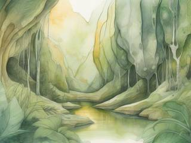
As in Terrene, each world is one tile-based room from top to bottom. Space at the top is weightless; gravity fades in through the upper atmosphere; coming down too fast lights up a re-entry glow; below the surface there's water and then caves, down to bedrock you can't break. The edges are solid walls.
Underground areas are generated with several methods mixed together, so worlds don't all feel alike: tile-matching rules and shape grammars for built places, mazes, noise-carved caves, and open chambers linked by tunnels. Soft ground can be dug, and the dirt goes to the nearest outpost's factory instead of vanishing, so you never leave a world full of holes.
Power that comes and goes
Supercores and a gentle hand
Supercores are alien power cores, rare and usually somewhere awkward. Plugged into your kit, each one does one thing: a stronger winch, a longer stun, a faster shuttle, a lighter step. They stack, and they wear down with use until they crumble, so your kit keeps changing shape. At most ten come along to the next star system.
The worlds were handed over in good shape, and the game asks you to leave them that way: ruins, nests and old growth are worth more intact. That's natural, not a rule with a penalty. A relic dropped down a shaft arrives home chipped, and the gallery shows the chip. A nest you stomped through is a nest whose creatures have fled.
Trivia
Three games from one notebook
Reactorcore played Terrene, a pixel-art planet explorer, liked its world of tall planet slices, and kept wanting it to be something else. The result was one long design for a planetary explorer, the Inspector, that tried to be everything at once, and then three remixes that each took one part of it and went all the way: this gentle collectathon, the all-out assault of AAL Exterminator, and the hands-only survival race of AAL Voyager. They share the same world tech and very little else.
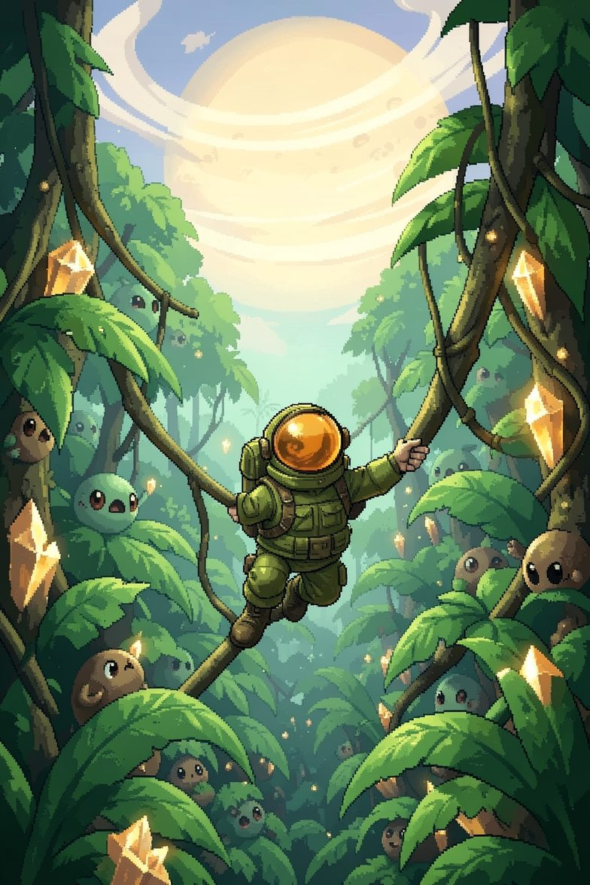
From the Bioarchive, with thanks
AAL Collector: Reach, Capture, Recover
Dear collector, a new star system is on the map. We'd like a sample of everything that lives there, a look at everything left behind, and anything at all that glints.
Take the shuttle. Follow the trail. Carry it carefully, and bring the little ones home in something they'll like.
Everything you bring back gets a place in the gallery.